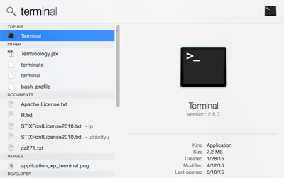
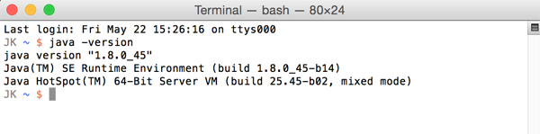
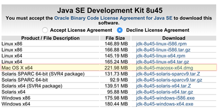

05. Install Java: Mac Guide
Install Java: Mac Guide
Installing The Java Development Kit: Mac Guide
Click here for instructions for Windows
There are several steps you need to take before installing Android Studio. Some of these steps might seem very technical, and it's OK if you don't fully understand the terminology.
Make sure to follow along the instructions carefully, and post on the forums if you get stuck.
1. Check If You Have Java on Your Computer
Open the Terminal
Before you start, you will need to open a program on your computer called the Terminal. To do this, click the search icon (magnifying glass) on the top right of your desktop, and type in "terminal."

You can also navigate to the Terminal from your Applications > Utilities folder.
Use the Terminal to find information
Now you are ready to check if you have the Java Developer Kit, version 7 or greater, already installed.
To check if you have JDK installed (and which version), open the Terminal and type:
java -version
into the window, and hit enter.
The example below shows Java version 8.0 -- the version number comes after the “1.”

If you have Java 7 or greater, move on to the next node: Install Android Studio.
If the JDK is not available, or the version is lower than 7, go on to Step 2, below.
2. Download the Java Development Kit
Download the Java Development Kit, aka, the JDK, from this page.
Oracle, the company that maintains Java, has a lot of options and acronyms. We're looking for the plain old JDK. This is the kit you need to start developing your apps with Java.
As of May 2015, the download icon for the JDK looked like this:

After you click the download link, you'll see a list of options for download. Go to the Java SE Development Kit menu of options.
Do not go to the demos and samples (the menus look very similar, so make sure to read the heading at the top).
Install
Select the JDK for your operating system (Mac OSX). In most cases, if you have a machine that is less than 4 years old, you should choose the x64 (64-bit) version (highlighted below). Search online for instructions if you have an older machine and are unsure what version to download.

Accept the license agreement to download and locate the file, and double click it to begin the installation process.
3: Verify that Java is Installed
Go back to Step 1 and follow the instructions to open your Terminal and verify that you have Java version 7 or higher installed.
Do not move on with Android Studio install until after you have installed the JDK. Without a working copy of Java, the rest of the process will not work. If you can't get the download to work, look for error messages, and try googling to find a solution.